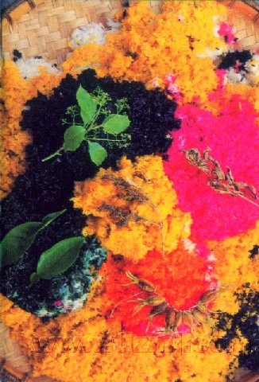

糯米饭是苗族主食之一，在苗族人民生活中占有重要地位，为男女老幼喜爱之食品，人们认为吃粘米饭不顶饿，味淡，不及糯米饭香，不用菜也能吃下，不用筷子，手捏着吃极为方便。凡逢走亲访友的礼品，各种节日（姊妹节）的主食，多为糯米做成的各种食品。有甑蒸绚白的糯米饭，染成五颜六色的花糯米饭，枕头形和三角的粽子、糯米粑，以及酿酒、长途旅行或上坡做活，多以竹制盒盛糯米饭储之随身带去食用。在新媳妇初见翁姑，女婿拜见岳丈时，糯米制作的上述礼品是必备的礼物。因此，糯米的用量比例是很大的。县境苗族人民煮粘米时普遍采用木甑蒸和鼎罐煮闷熟。多是按米放水，不滤米汤，群众称为“按汤饭”，苗语称“告翁贺”，食之既不淡味，又有营养。糯米是先用冷水泡发胀后，过滤放于木甑上蒸熟，再盛放于木盆内而食。粘稻或糯稻，多是舂一次吃一天，常年如此。认为现舂现煮，吃了养人，放久了的米是陈米，吃了不养人。粮食加工工具有石碓、水碾两种，是很早就使用的工具，每户必备。水碾（有称水磨的）碾米才是三几百年历史，据传是外族传入的。近水的寨每寨有架或数架水碾，也只有在农忙季节才使用，干旱主要还是依靠石碓舂米。加工方法，把焙笼烘干或日晒干的稻谷放入石臼内，用脚踏碓杆后端，使舂杆起落，利用落下的力来舂米，舂好即筛去糠而得净米。